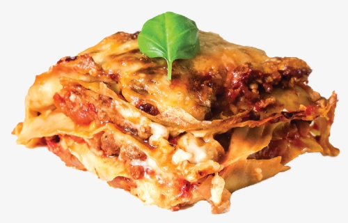

Recipe Description
An uncomplicated meat sauce serves as the foundation for this traditional lasagna dish.
Noodles, cheese, and sauce are layered, then baked till bubbling!
This works nicely when frozen and is excellent for feeding a large household.
Ingredients (not everything)
-
2 teaspoons extra virgin olive oil
-
1 pound ground beef chuck
-
3 ounces tomato paste(half a 6-ounce can)
-
1/4 cup chopped fresh oregano, or 2 teaspoons dried oregano
Steps
-
To begin, prepare the sauce by combining tomato sauce, tomato paste, and crushed tomatoes with ground beef, bell peppers, onions, and other ingredients. The sauce has a rich depth of flavor thanks to the three varieties of tomatoes.
-
While you boil the noodles and prepare the cheeses, let this simmer. We're using ricotta, shredded mozzarella, and parmesan; this three-cheese mixture provides the lasagna wonderful flavor, much like the combination of tomatoes!
-
It's merely an assembly job after that.
A layer of noodles, a cup of beef sauce, additional noodles, sauce, and cheese.
Repeat this process until you have three layers and all of the components are gone.
-
Bake until it is bubbly then you're done! It's ready to be enjoyed!